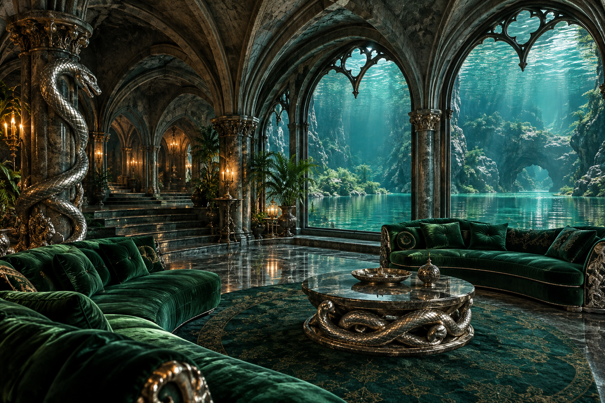
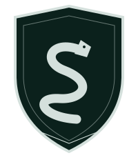

Draco Malfoy
Un personaje marcado por la presión de su familia.
La ambición encuentra su camino
Observa con atención. Piensa varios pasos adelante. Convierte una aspiración en una decisión.


Salazar Slytherin participó en la fundación de Hogwarts. Valoraba la astucia y la ambición, aunque su prejuicio contra estudiantes de origen muggle marcó la historia de su casa. La sala común se sitúa en las mazmorras; pertenecer a ella no determina las decisiones morales de sus integrantes.
La asociación elemental es simbólica. Los emblemas de este sitio son interpretaciones gráficas.
Una casa reúne historias distintas. Sus valores se expresan de maneras diversas.
Un personaje marcado por la presión de su familia.
Una historia de decisiones complejas y lealtades ocultas.
Talento para reconocer habilidades y construir vínculos.
“Toda meta comienza con una estrategia.”FRASE ORIGINAL PARA ESTE EJEMPLO · NO ES UNA CITA DE LA SAGA
Regla 60-30-10 orientativa: base oscura dominante, superficies e imagen como apoyo, y acento para detalles, enlaces y símbolos.
Una familia local distingue a la casa. El texto de lectura mantiene la familia Archivo y una longitud cómoda de línea.
Contenido adaptado con fines educativos de HarryPotter.com. Frase original; escena generada y escudo reinterpretado.